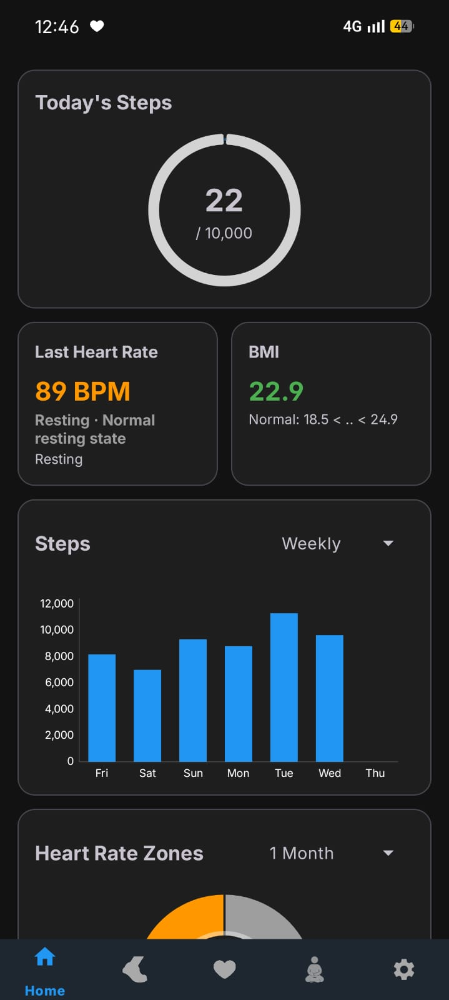
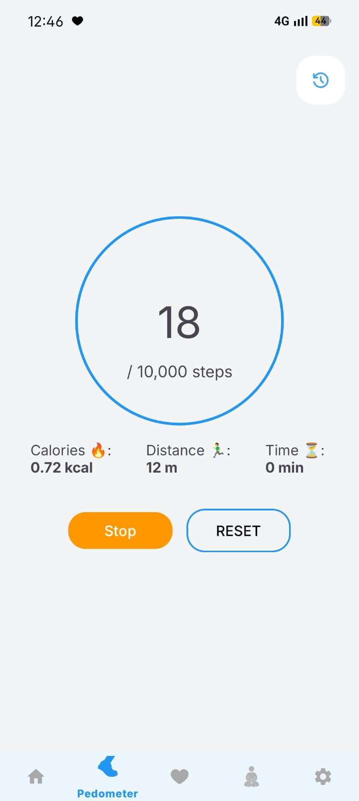
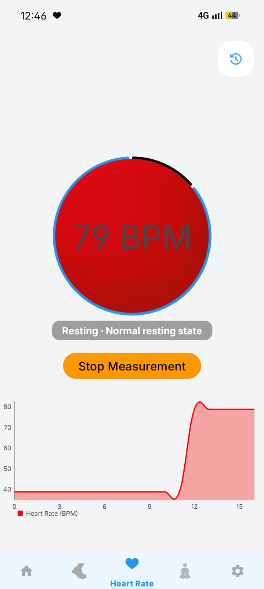
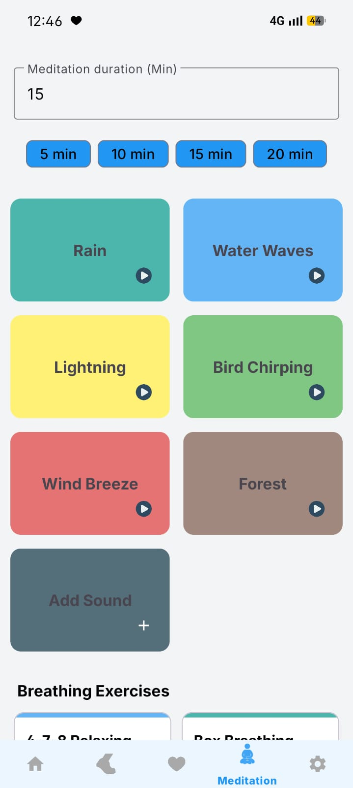
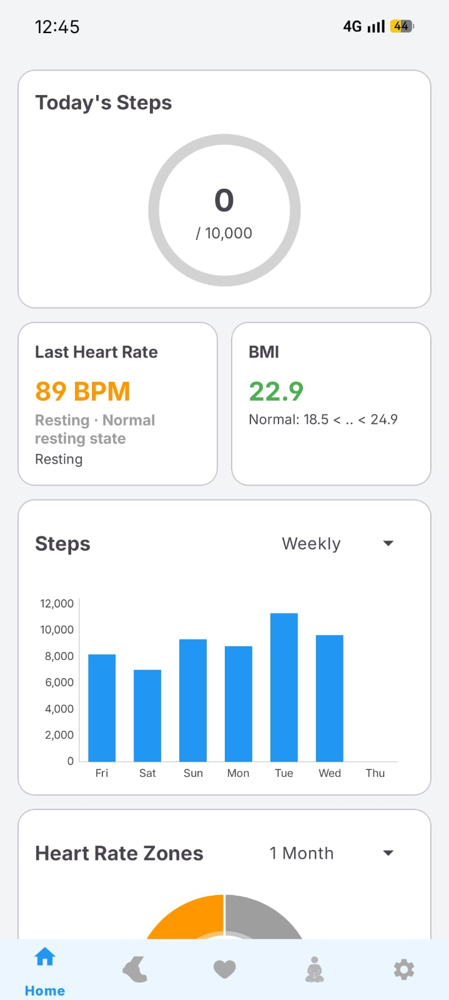
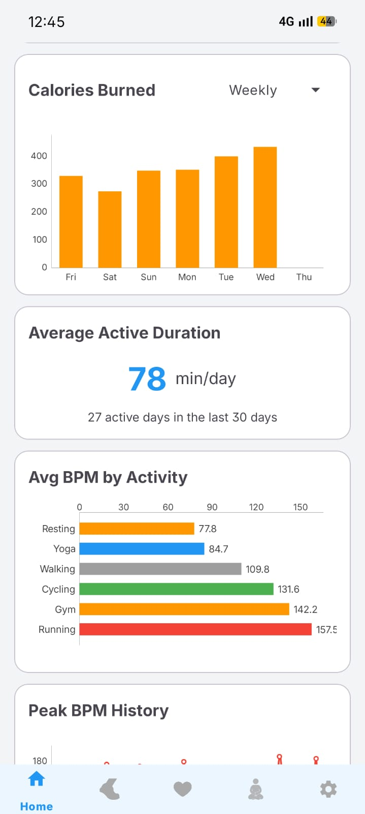
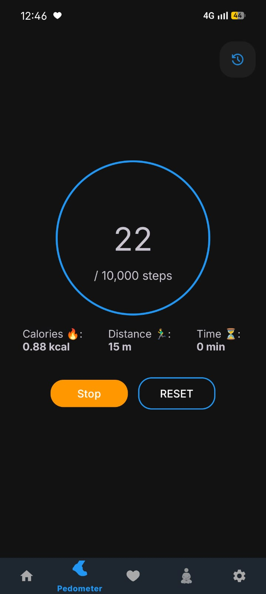
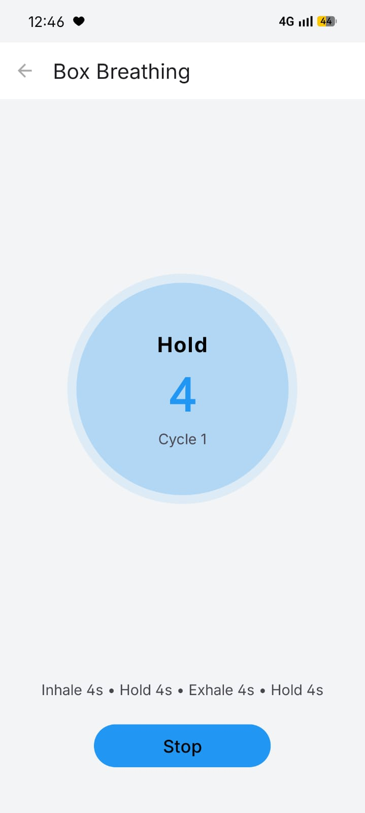
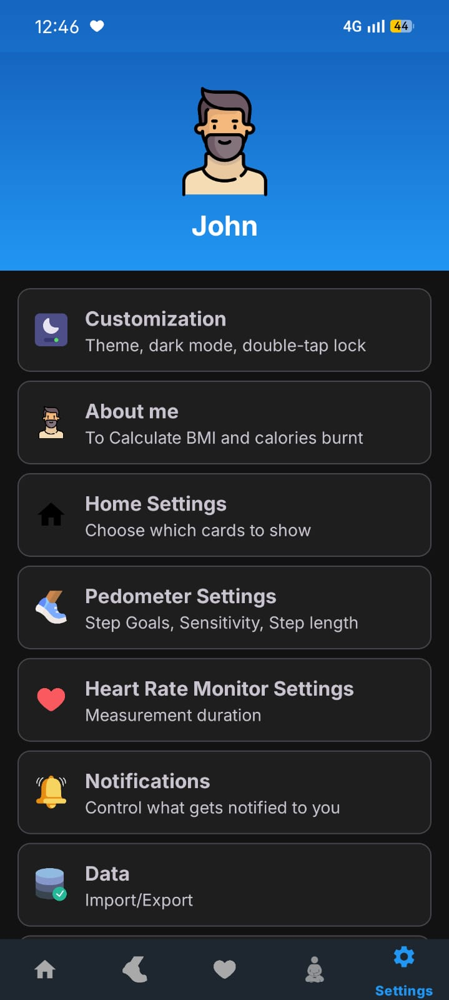

Health tracking that never leaves your phone.
Sehat counts your steps, reads your heart rate from the camera, and guides your breathing - all stored on your device alone. No accounts. No cloud. No internet permission, at all.

No INTERNET permission
The app isn't granted network access. It is technically incapable of phoning home.
Stored on your phone
Steps, heart rate and settings live in a local on-device database - never a server.
Zero tracking
No ads, no analytics, no crash reporting, no third-party SDKs. Nobody is watching.
Open source · MIT
Every line is public. Read it, audit it, or build it yourself from source.
Three tools for a healthier day
Everything you'd reach for in a fitness app - without handing your body's data to anyone.

Count every step, even in your pocket
Sehat reads your phone's built-in step sensor and keeps counting in the background as a foreground service.
- Live steps, distance, calories & active time
- Configurable daily goal & sensor sensitivity
- Session history and live BMI from your profile

Your pulse, read by the camera
Rest a fingertip on the lens. Sehat detects subtle shifts in reflected light to find your beat - no smartwatch required.
- Real-time BPM with a live waveform chart
- Tag readings by activity - resting, walking, running
- No frames recorded or stored - ever

Breathe, focus, unwind
Six ambient soundscapes and guided breathing exercises to help you slow down - playing uninterrupted in the background.
- Rain, waves, forest, birds, wind & more
- Box breathing & 4-7-8 with selectable durations
- Add your own sounds from device storage
We didn't add privacy. We removed everything else.
Most apps promise not to misuse your data. Sehat is built so it physically can't. There's no network permission in the manifest - so there's no way to send anything anywhere.
INTERNET permission means no sockets, no requests, no exfiltration - guaranteed by Android itself.
Your data
Steps · heart rate · profile · settings
The cloud
No servers · no sync · no account
Every permission, explained
Sehat asks for exactly what each feature needs - and nothing more.
Notably absent: INTERNET, location, contacts, and storage write permissions.
Built for clarity, light or dark
Clean Material design with light, dark and pure-black AMOLED themes, plus colour accents you can switch.





Good to know
Everything about how Sehat works, what it measures, and how it keeps your data private.
Privacy & data
Does the app use the internet?
INTERNET permission at all, so it works entirely offline and is technically incapable of making a network connection. There are no analytics, ads, or telemetry of any kind.How is my data stored?
Is my data encrypted?
How do I export or back up my data?
Can I delete my health records?
Accuracy & measurement
How accurate is the heart rate measurement?
How accurate is the pedometer?
Using the app
Can I change the default screen shown on launch?
What does the double-tap to lock feature do?
About the project
Is Sehat really free?
Why isn't it on the Play Store?
What Android version do I need?
Take your health back.
Download Sehat and start tracking steps, heart rate and calm - knowing your data stays exactly where it belongs.